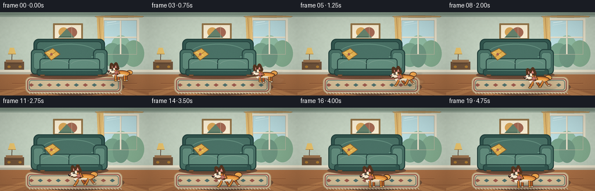
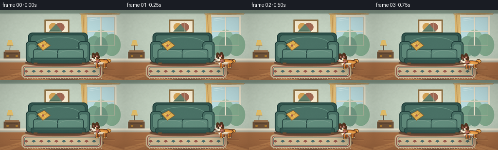
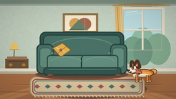
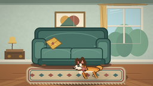
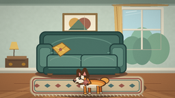

CODING AGENTS AS PIXEL WORLD MODELS
traex/DeepSeek-V4.1-Flash · dynamic_spatial_relationship_0003
点击播放 · 原生 RGB 像素
逐轮保存的候选
回放视频、检查图与代码变化。
每份候选均可单独播放。实际图片检查记录在下方工具轨迹中。
候选 01播放与检查图
点击播放 · 原生 RGB 像素

展开代码变化
--- 上一保存版本
+++ 本次保存版本
@@ -0,0 +1,534 @@
+from __future__ import annotations
+
+import math
+from pathlib import Path
+
+import numpy as np
+from PIL import Image, ImageDraw, ImageFilter
+
+import artifact_io
+
+
+WIDTH = 256
+HEIGHT = 144
+FRAMES = 20
+FPS = 4
+SCALE = 4
+CANVAS = (WIDTH * SCALE, HEIGHT * SCALE)
+
+
+def rgb(hex_value: str) -> tuple[int, int, int]:
+ value = hex_value.lstrip("#")
+ return tuple(int(value[i : i + 2], 16) for i in (0, 2, 4))
+
+
+COL = {
+ "wall": rgb("#aebfb0"),
+ "wall_light": rgb("#c5d2c1"),
+ "wall_shadow": rgb("#899c8c"),
+ "trim": rgb("#e7e0ca"),
+ "trim_shadow": rgb("#b9b39f"),
+ "floor": rgb("#a96f45"),
+ "floor_dark": rgb("#895334"),
+ "floor_light": rgb("#bd8150"),
+ "outline": rgb("#26352f"),
+ "sofa": rgb("#476d62"),
+ "sofa_light": rgb("#5f8879"),
+ "sofa_dark": rgb("#31544d"),
+ "sofa_edge": rgb("#223f3b"),
+ "mustard": rgb("#d7a94d"),
+ "mustard_light": rgb("#e8c36d"),
+ "mustard_dark": rgb("#ad7b31"),
+ "cream": rgb("#f1e6cc"),
+ "rug": rgb("#d8c29b"),
+ "rug_dark": rgb("#b69872"),
+ "rug_red": rgb("#9d5b4e"),
+ "rug_blue": rgb("#50716e"),
+ "dog": rgb("#d88135"),
+ "dog_light": rgb("#efa64e"),
+ "dog_dark": rgb("#b85d27"),
+ "dog_outline": rgb("#51331f"),
+ "dog_white": rgb("#f4e6ce"),
+ "dog_white_shadow": rgb("#d9c7aa"),
+ "ear_inner": rgb("#df8d83"),
+ "black": rgb("#24241f"),
+}
+
+
+def rounded_rect(draw: ImageDraw.ImageDraw, box, radius, fill, outline=None, width=1):
+ draw.rounded_rectangle(box, radius=radius, fill=fill, outline=outline, width=width)
+
+
+def polygon(draw: ImageDraw.ImageDraw, points, fill, outline=None, width=1):
+ draw.polygon(points, fill=fill)
+ if outline is not None:
+ draw.line(points + [points[0]], fill=outline, width=width, joint="curve")
+
+
+def make_wall_texture(width: int, height: int) -> Image.Image:
+ y = np.linspace(0.0, 1.0, height, dtype=np.float32)[:, None, None]
+ top = np.array(COL["wall_light"], dtype=np.float32)
+ bottom = np.array(COL["wall"], dtype=np.float32)
+ wall = top * (1.0 - 0.45 * y) + bottom * (0.45 * y)
+ wall = np.repeat(wall, width, axis=1)
+
+ rng = np.random.default_rng(7)
+ coarse = rng.normal(0.0, 3.0, (height // 12 + 2, width // 12 + 2))
+ coarse_img = Image.fromarray(
+ np.clip(coarse + 128.0, 0, 255).astype(np.uint8), mode="L"
+ ).resize((width, height), Image.Resampling.BICUBIC)
+ texture = (np.asarray(coarse_img, dtype=np.float32) - 128.0) * 0.42
+ wall += texture[:, :, None]
+ return Image.fromarray(np.clip(wall, 0, 255).astype(np.uint8), mode="RGB")
+
+
+def draw_window(draw: ImageDraw.ImageDraw):
+ x0, y0, x1, y1 = 716, 55, 942, 292
+ rounded_rect(draw, (x0 - 15, y0 - 13, x1 + 15, y1 + 15), 7, COL["trim"])
+ rounded_rect(draw, (x0, y0, x1, y1), 3, rgb("#a8d2d4"))
+
+ # Soft sky and distant trees.
+ draw.rectangle((x0 + 4, y0 + 4, x1 - 4, y1 - 4), fill=rgb("#b9dadd"))
+ draw.ellipse((x0 + 42, y0 + 105, x1 - 38, y1 + 65), fill=rgb("#8fbaa1"))
+ draw.ellipse((x0 - 10, y0 + 158, x0 + 126, y1 + 86), fill=rgb("#759f87"))
+ draw.ellipse((x0 + 132, y0 + 139, x1 + 50, y1 + 85), fill=rgb("#82aa8d"))
+ draw.ellipse((x0 + 60, y0 + 165, x0 + 170, y1 + 89), fill=rgb("#6d947f"))
+
+ # Glass highlights and window muntins.
+ draw.line((x0 + 20, y0 + 17, x0 + 83, y0 + 8), fill=rgb("#d9eeee"), width=6)
+ draw.line((x0 + 17, y0 + 34, x0 + 112, y0 + 18), fill=rgb("#d9eeee"), width=3)
+ cx = (x0 + x1) // 2
+ cy = (y0 + y1) // 2
+ draw.line((cx, y0, cx, y1), fill=COL["trim"], width=10)
+ draw.line((x0, cy, x1, cy), fill=COL["trim"], width=10)
+ draw.line((cx + 5, y0, cx + 5, y1), fill=COL["trim_shadow"], width=2)
+ draw.line((x0, cy + 5, x1, cy + 5), fill=COL["trim_shadow"], width=2)
+ draw.rectangle((x0, y0, x1, y1), outline=COL["trim_shadow"], width=3)
+
+ # Curtains frame the window without hiding the dog's starting space.
+ draw.polygon(
+ [(x0 - 50, y0 - 22), (x0 - 5, y0 - 20), (x0 + 2, y1 + 30), (x0 - 38, y1 + 16)],
+ fill=rgb("#d9b46f"),
+ )
+ draw.line(
+ [(x0 - 35, y0 - 16), (x0 - 19, y1 + 19)],
+ fill=rgb("#b98b4c"),
+ width=4,
+ )
+ draw.line(
+ [(x0 - 15, y0 - 15), (x0 - 6, y1 + 23)],
+ fill=rgb("#edcc89"),
+ width=3,
+ )
+ draw.ellipse((x0 - 64, y0 - 33, x1 + 48, y0 - 18), fill=rgb("#8c7350"))
+ draw.rectangle((x0 - 57, y0 - 29, x1 + 40, y0 - 20), fill=rgb("#b39360"))
+
+
+def draw_art(draw: ImageDraw.ImageDraw):
+ rounded_rect(draw, (365, 77, 570, 191), 3, rgb("#8f7146"))
+ draw.rectangle((377, 89, 558, 179), fill=COL["cream"])
+ draw.ellipse((403, 105, 470, 170), fill=rgb("#d3a155"))
+ draw.ellipse((451, 104, 530, 175), fill=rgb("#9f6651"))
+ draw.polygon([(400, 176), (459, 114), (511, 176)], fill=rgb("#637e69"))
+ draw.line((409, 169, 489, 169), fill=rgb("#405c4d"), width=4)
+ draw.line((493, 95, 493, 176), fill=rgb("#c7b797"), width=2)
+
+
+def draw_floor(draw: ImageDraw.ImageDraw):
+ draw.rectangle((0, 420, CANVAS[0], CANVAS[1]), fill=COL["floor"])
+ vanishing = (505, 418)
+ board_edges = [-80, 82, 245, 400, 555, 710, 865, 1024, 1120]
+ for index in range(len(board_edges) - 1):
+ left = board_edges[index]
+ right = board_edges[index + 1]
+ color = COL["floor_light"] if index % 2 == 0 else COL["floor"]
+ draw.polygon(
+ [(vanishing[0], 420), (left, 576), (right, 576), (vanishing[0], 420)],
+ fill=color,
+ )
+ draw.line(
+ [(vanishing[0], 421), ((left + right) / 2, 576)],
+ fill=COL["floor_dark"],
+ width=2,
+ )
+ for y, half_width in [(457, 300), (492, 430), (535, 570)]:
+ draw.line((512 - half_width, y, 512 + half_width, y), fill=COL["floor_dark"], width=3)
+ draw.line(
+ (512 - half_width, y + 4, 512 + half_width, y + 4),
+ fill=COL["floor_light"],
+ width=2,
+ )
+
+ # Baseboard and wall shadow anchor the room.
+ draw.rectangle((0, 404, CANVAS[0], 429), fill=COL["trim_shadow"])
+ draw.rectangle((0, 398, CANVAS[0], 414), fill=COL["trim"])
+ draw.line((0, 414, CANVAS[0], 414), fill=rgb("#d2cbb8"), width=3)
+
+
+def draw_rug(draw: ImageDraw.ImageDraw):
+ box = (174, 446, 842, 561)
+ draw.ellipse((box[0] + 14, box[1] + 15, box[2] + 14, box[3] + 12), fill=rgb("#73513a"))
+ draw.rounded_rectangle(box, radius=35, fill=COL["rug"], outline=COL["rug_dark"], width=5)
+ draw.rounded_rectangle(
+ (box[0] + 13, box[1] + 12, box[2] - 13, box[3] - 12),
+ radius=24,
+ outline=COL["rug_red"],
+ width=7,
+ )
+ draw.rounded_rectangle(
+ (box[0] + 26, box[1] + 23, box[2] - 26, box[3] - 23),
+ radius=18,
+ outline=COL["rug_blue"],
+ width=4,
+ )
+ for x in range(215, 820, 62):
+ draw.polygon(
+ [(x, 491), (x + 18, 503), (x, 515), (x - 18, 503)],
+ fill=COL["rug_red"] if (x // 62) % 2 else COL["rug_blue"],
+ )
+ for x in range(198, 842, 21):
+ draw.line((x, 555, x + 9, 565), fill=COL["cream"], width=3)
+
+
+def draw_sofa(draw: ImageDraw.ImageDraw):
+ outline = COL["sofa_edge"]
+
+ # Ground shadow.
+ draw.ellipse((205, 403, 746, 464), fill=rgb("#714f3a"))
+ draw.ellipse((219, 407, 732, 453), fill=rgb("#644533"))
+
+ # Back, arms, seat, and front rail.
+ rounded_rect(draw, (230, 184, 722, 354), 36, COL["sofa_dark"], outline, 7)
+ rounded_rect(draw, (251, 202, 701, 332), 27, COL["sofa"], outline, 5)
+ draw.arc((288, 218, 666, 345), 188, 352, fill=COL["sofa_light"], width=6)
+ rounded_rect(draw, (212, 255, 312, 430), 30, COL["sofa"], outline, 7)
+ rounded_rect(draw, (640, 255, 740, 430), 30, COL["sofa"], outline, 7)
+ rounded_rect(draw, (230, 278, 298, 394), 20, COL["sofa_light"], COL["sofa_dark"], 3)
+ rounded_rect(draw, (654, 278, 722, 394), 20, COL["sofa_light"], COL["sofa_dark"], 3)
+
+ rounded_rect(draw, (272, 319, 493, 408), 22, COL["sofa_light"], outline, 6)
+ rounded_rect(draw, (471, 319, 688, 408), 22, COL["sofa_light"], outline, 6)
+ draw.arc((288, 330, 478, 400), 195, 345, fill=rgb("#759788"), width=4)
+ draw.arc((486, 330, 672, 400), 195, 345, fill=rgb("#759788"), width=4)
+ rounded_rect(draw, (252, 391, 705, 438), 18, COL["sofa_dark"], outline, 6)
+ draw.line((283, 402, 675, 402), fill=COL["sofa_light"], width=4)
+
+ # Short wooden feet.
+ for x in (275, 671):
+ draw.polygon([(x, 431), (x + 34, 431), (x + 27, 451), (x + 7, 451)], fill=rgb("#65452f"))
+ draw.line((x + 5, 436, x + 28, 436), fill=rgb("#9a6b42"), width=3)
+
+ # Cushions and piping add detail at the final display size.
+ for x in (292, 624):
+ draw.ellipse((x, 302, x + 19, 316), fill=COL["sofa_light"], outline=COL["sofa_dark"], width=2)
+
+ # Patterned throw pillow.
+ draw.polygon(
+ [(302, 279), (363, 247), (416, 290), (352, 334)],
+ fill=COL["mustard"],
+ outline=rgb("#805c2e"),
+ width=5,
+ )
+ draw.line((324, 275, 376, 298), fill=COL["mustard_light"], width=6)
+ draw.line((338, 307, 385, 270), fill=COL["mustard_dark"], width=4)
+ draw.ellipse((345, 282, 362, 299), fill=COL["rug_red"])
+
+
+def dog_path(index: int) -> tuple[float, float, float, float]:
+ # Hand-keyed positions preserve a readable spatial change at 4 fps.
+ positions = [
+ (842, 476),
+ (842, 476),
+ (834, 480),
+ (816, 487),
+ (786, 495),
+ (749, 502),
+ (710, 508),
+ (679, 513),
+ (653, 518),
+ (631, 523),
+ (611, 529),
+ (595, 535),
+ (582, 540),
+ (571, 545),
+ (563, 548),
+ (558, 550),
+ (556, 551),
+ (555, 552),
+ (555, 552),
+ (555, 552),
+ ]
+ x, y = positions[index]
+ scale = 0.91 + 0.20 * min(index / 15.0, 1.0)
+ if index <= 1:
+ lean = 0.0
+ elif index <= 15:
+ lean = -0.07
+ else:
+ lean = -0.035
+ return x, y, scale, lean
+
+
+def draw_dog_leg(
+ draw: ImageDraw.ImageDraw,
+ hip: tuple[float, float],
+ knee: tuple[float, float],
+ foot: tuple[float, float],
+ paw_color,
+ far: bool = False,
+):
+ outer = COL["dog_outline"]
+ inner = COL["dog_dark"] if far else COL["dog"]
+ points = [hip, knee, foot]
+ draw.line(points, fill=outer, width=18, joint="curve")
+ draw.line(points, fill=inner, width=11, joint="curve")
+ draw.ellipse((foot[0] - 11, foot[1] - 6, foot[0] + 12, foot[1] + 6), fill=outer)
+ draw.ellipse((foot[0] - 7, foot[1] - 4, foot[0] + 9, foot[1] + 3), fill=paw_color)
+
+
+def draw_dog(
+ base: Image.Image,
+ x: float,
+ y: float,
+ scale: float,
+ lean: float,
+ phase: float,
+ running: float,
+ wag: float,
+) -> Image.Image:
+ layer = Image.new("RGBA", base.size, (0, 0, 0, 0))
+ draw = ImageDraw.Draw(layer)
+
+ def p(px: float, py: float) -> tuple[float, float]:
+ # A subtle body lean makes the acceleration read while keeping the paws grounded.
+ rx = px * math.cos(lean) - py * math.sin(lean)
+ ry = px * math.sin(lean) + py * math.cos(lean)
+ return x + rx * scale, y + ry * scale
+
+ def box(x0, y0, x1, y1):
+ a = p(x0, y0)
+ b = p(x1, y1)
+ return (min(a[0], b[0]), min(a[1], b[1]), max(a[0], b[0]), max(a[1], b[1]))
+
+ # Contact shadow follows the body, staying under the moving dog.
+ shadow = Image.new("RGBA", base.size, (0, 0, 0, 0))
+ shadow_draw = ImageDraw.Draw(shadow)
+ shadow_draw.ellipse(
+ (x - 112 * scale, y - 15 * scale, x + 82 * scale, y + 13 * scale),
+ fill=(63, 45, 35, 118),
+ )
+ shadow = shadow.filter(ImageFilter.GaussianBlur(7 * SCALE))
+ layer = Image.alpha_composite(shadow, layer)
+ draw = ImageDraw.Draw(layer)
+
+ bob = running * 5.0 * math.sin(phase * 2.0)
+ x, y = x, y + bob
+
+ # Far-side legs.
+ for xoff, phase_offset in [(-28.0, math.pi), (30.0, math.pi)]:
+ swing = running * 23.0 * math.sin(phase + phase_offset)
+ lift = running * max(0.0, math.cos(phase + phase_offset)) * 15.0
+ hip = p(xoff, -43)
+ knee = p(xoff + swing * 0.42, -22 - lift * 0.45)
+ foot = p(xoff + swing, -4 - lift)
+ draw_dog_leg(draw, hip, knee, foot, COL["dog_white_shadow"], far=True)
+
+ # Tail behind the body.
+ tail_wag = 7.0 * math.sin(wag)
+ tail_center = p(54, -67 + tail_wag)
+ tail_r = 25 * scale
+ draw.ellipse(
+ (tail_center[0] - tail_r, tail_center[1] - tail_r * 0.72,
+ tail_center[0] + tail_r, tail_center[1] + tail_r * 0.72),
+ fill=COL["dog_outline"],
+ )
+ draw.ellipse(
+ (tail_center[0] - tail_r + 4 * scale, tail_center[1] - tail_r * 0.72 + 4 * scale,
+ tail_center[0] + tail_r - 4 * scale, tail_center[1] + tail_r * 0.72 - 4 * scale),
+ fill=COL["dog_light"],
+ )
+
+ # Rump and long corgi body.
+ draw.ellipse(box(-78, -82, 60, -31), fill=COL["dog_outline"])
+ draw.ellipse(box(-72, -76, 54, -36), fill=COL["dog"])
+ draw.ellipse(box(-66, -67, 45, -34), fill=COL["dog_light"])
+
+ # Cream chest and belly.
+ draw.ellipse(box(-75, -58, -35, -30), fill=COL["dog_white"])
+ draw.ellipse(box(-54, -51, 28, -32), fill=COL["dog_white"])
+ draw.arc(box(-42, -48, 20, -34), 8, 164, fill=COL["dog_white_shadow"], width=3 * SCALE)
+
+ # Short corgi neck and head.
+ draw.polygon(
+ [p(-68, -70), p(-32, -89), p(-15, -56), p(-49, -43)],
+ fill=COL["dog_outline"],
+ )
+ draw.polygon(
+ [p(-65, -68), p(-34, -84), p(-21, -58), p(-49, -48)],
+ fill=COL["dog"],
+ )
+ draw.ellipse(box(-96, -104, -39, -50), fill=COL["dog_outline"])
+ draw.ellipse(box(-91, -99, -44, -55), fill=COL["dog"])
+
+ # Pointed ears, with one slightly farther back.
+ ear_far = [p(-83, -93), p(-82, -126), p(-61, -101)]
+ polygon(draw, ear_far, COL["dog_dark"], COL["dog_outline"], 6 * SCALE)
+ polygon(
+ draw,
+ [p(-79, -97), p(-79, -117), p(-67, -103)],
+ COL["ear_inner"],
+ )
+ ear_near = [p(-64, -98), p(-48, -130), p(-35, -96)]
+ polygon(draw, ear_near, COL["dog"], COL["dog_outline"], 6 * SCALE)
+ polygon(
+ draw,
+ [p(-59, -101), p(-49, -120), p(-42, -99)],
+ COL["ear_inner"],
+ )
+
+ # White blaze and muzzle.
+ draw.polygon(
+ [p(-68, -101), p(-55, -97), p(-57, -67), p(-71, -69)],
+ fill=COL["dog_white"],
+ )
+ draw.ellipse(box(-110, -85, -52, -56), fill=COL["dog_outline"])
+ draw.ellipse(box(-106, -82, -57, -59), fill=COL["dog_white"])
+ draw.ellipse(box(-96, -91, -78, -74), fill=COL["dog_white"])
+
+ # Eye, nose, and a small smiling mouth.
+ draw.ellipse(box(-83, -91, -71, -79), fill=COL["black"])
+ draw.ellipse(box(-80, -88, -76, -84), fill=rgb("#fff8e9"))
+ draw.ellipse(box(-113, -82, -95, -68), fill=COL["black"])
+ draw.ellipse(box(-107, -79, -100, -74), fill=rgb("#5e4c40"))
+ draw.arc(box(-105, -74, -82, -58), 8, 98, fill=COL["dog_outline"], width=3 * SCALE)
+ draw.ellipse(box(-108, -82, -95, -74), fill=rgb("#b97f72"))
+
+ # Near-side legs animate in counterpoint to the far pair.
+ near_legs = [(-51.0, 0.0, COL["dog_light"]), (17.0, 0.0, COL["dog_light"])]
+ for xoff, phase_offset, paw_color in near_legs:
+ swing = running * 26.0 * math.sin(phase + phase_offset)
+ lift = running * max(0.0, math.cos(phase + phase_offset)) * 18.0
+ hip = p(xoff, -42)
+ knee = p(xoff + swing * 0.42, -22 - lift * 0.45)
+ foot = p(xoff + swing, -4 - lift)
+ draw_dog_leg(draw, hip, knee, foot, paw_color, far=False)
+
+ # A small collar gives the head a crisp silhouette.
+ draw.line(
+ (p(-55, -69), p(-35, -56)),
+ fill=COL["rug_red"],
+ width=8 * SCALE,
+ )
+ draw.line(
+ (p(-54, -70), p(-34, -57)),
+ fill=rgb("#ca7869"),
+ width=3 * SCALE,
+ )
+ draw.ellipse(box(-42, -58, -30, -46), fill=COL["mustard_light"], outline=COL["dog_outline"], width=3 * SCALE)
+
+ return Image.alpha_composite(base.convert("RGBA"), layer).convert("RGB")
+
+
+def draw_motion_details(image: Image.Image, index: int, running: float, x: float, y: float, scale: float):
+ if running < 0.25:
+ return image
+ draw = ImageDraw.Draw(image)
+ alpha_layer = Image.new("RGBA", image.size, (0, 0, 0, 0))
+ ad = ImageDraw.Draw(alpha_layer)
+ strength = int(95 * running)
+ # Small dust puffs trailing to the dog's right.
+ for offset, size in [(62, 12), (88, 8), (105, 5)]:
+ cx = x + offset * scale
+ cy = y - (8 + (offset // 8)) * scale
+ ad.ellipse(
+ (cx - size * SCALE, cy - size * 0.55 * SCALE,
+ cx + size * SCALE, cy + size * 0.55 * SCALE),
+ fill=(206, 173, 128, max(20, strength - offset // 2)),
+ )
+ # Speed marks remain subtle so the sofa and spatial relation stay dominant.
+ for offset, length in [(55, 25), (74, 18), (94, 12)]:
+ sy = y - (56 + offset // 5) * scale
+ ad.line(
+ (x + offset * scale, sy, x + (offset + length) * scale, sy - 2 * SCALE),
+ fill=(241, 226, 193, max(20, strength - 18)),
+ width=2 * SCALE,
+ )
+ alpha_layer = alpha_layer.filter(ImageFilter.GaussianBlur(1.2 * SCALE))
+ return Image.alpha_composite(image.convert("RGBA"), alpha_layer).convert("RGB")
+
+
+def render_background() -> Image.Image:
+ image = make_wall_texture(*CANVAS)
+ draw = ImageDraw.Draw(image)
+
+ # Ceiling shadow and architectural trim.
+ draw.rectangle((0, 0, CANVAS[0], 22), fill=rgb("#7e9182"))
+ draw.rectangle((0, 22, CANVAS[0], 32), fill=rgb("#98aa9a"))
+ draw_window(draw)
+ draw_art(draw)
+
+ # Slender sideboard and lamp on the left, kept peripheral.
+ draw.rectangle((30, 342, 165, 405), fill=rgb("#6e523a"))
+ draw.rectangle((40, 329, 155, 345), fill=rgb("#9c7550"))
+ draw.line((48, 355, 146, 355), fill=rgb("#543d2d"), width=4)
+ draw.ellipse((51, 369, 72, 385), fill=COL["mustard_dark"])
+ draw.ellipse((127, 369, 148, 385), fill=COL["mustard_dark"])
+ draw.line((81, 330, 82, 285), fill=rgb("#5e4d3d"), width=5)
+ draw.polygon([(55, 289), (109, 289), (96, 246), (68, 246)], fill=COL["mustard_light"])
+ draw.line((55, 289, 109, 289), fill=COL["mustard_dark"], width=3)
+
+ draw_floor(draw)
+ draw_rug(draw)
+ draw_sofa(draw)
+ return image
+
+
+def add_finishing(image: Image.Image, index: int) -> Image.Image:
+ arr = np.asarray(image, dtype=np.float32)
+ h, w = arr.shape[:2]
+ yy, xx = np.mgrid[0:h, 0:w].astype(np.float32)
+ nx = (xx - w / 2) / (w / 2)
+ ny = (yy - h / 2) / (h / 2)
+ vignette = np.clip(1.04 - 0.12 * (nx * nx + ny * ny), 0.84, 1.04)
+ arr *= vignette[:, :, None]
+
+ # A very light, stable film grain keeps the flat vector fills from looking sterile.
+ rng = np.random.default_rng(100 + index)
+ grain = rng.normal(0.0, 1.7, (h, w, 1))
+ arr += grain
+ return Image.fromarray(np.clip(arr, 0, 255).astype(np.uint8), mode="RGB")
+
+
+def main():
+ case_dir = Path(__file__).resolve().parent
+ background = render_background()
+ output = []
+
+ for index in range(FRAMES):
+ x, y, scale, lean = dog_path(index)
+ if index <= 2:
+ running = 0.0
+ phase = 0.0
+ elif index <= 14:
+ running = min(1.0, (index - 2) / 2.0, (16 - index) / 2.0)
+ phase = (index - 3) * 2.15
+ else:
+ running = 0.0
+ phase = 0.0
+
+ wag = index * 0.82 + 0.35
+ image = background.copy()
+ image = draw_dog(image, x, y, scale, lean, phase, running, wag)
+ image = draw_motion_details(image, index, running, x, y, scale)
+ image = add_finishing(image, index)
+ frame = image.resize((WIDTH, HEIGHT), Image.Resampling.LANCZOS)
+ output.append(np.asarray(frame, dtype=np.uint8))
+
+ frames = np.stack(output, axis=0)
+ assert frames.shape == (FRAMES, HEIGHT, WIDTH, 3), frames.shape
+ artifact_io.save(frames, case_dir)
+ print(f"saved {FRAMES} frames to {case_dir}")
+
+
+if __name__ == "__main__":
+ main()
候选 02播放与检查图
点击播放 · 原生 RGB 像素

展开代码变化
--- 上一保存版本
+++ 本次保存版本
@@ -259,7 +259,7 @@
(555, 552),
]
x, y = positions[index]
- scale = 0.91 + 0.20 * min(index / 15.0, 1.0)
+ scale = 0.91 + 0.24 * min(index / 15.0, 1.0)
if index <= 1:
lean = 0.0
elif index <= 15:
@@ -325,7 +325,7 @@
x, y = x, y + bob
# Far-side legs.
- for xoff, phase_offset in [(-28.0, math.pi), (30.0, math.pi)]:
+ for xoff, phase_offset in [(-28.0, math.pi), (30.0, 0.0)]:
swing = running * 23.0 * math.sin(phase + phase_offset)
lift = running * max(0.0, math.cos(phase + phase_offset)) * 15.0
hip = p(xoff, -43)
@@ -404,7 +404,10 @@
draw.ellipse(box(-108, -82, -95, -74), fill=rgb("#b97f72"))
# Near-side legs animate in counterpoint to the far pair.
- near_legs = [(-51.0, 0.0, COL["dog_light"]), (17.0, 0.0, COL["dog_light"])]
+ near_legs = [
+ (-51.0, math.pi, COL["dog_light"]),
+ (17.0, 0.0, COL["dog_light"]),
+ ]
for xoff, phase_offset, paw_color in near_legs:
swing = running * 26.0 * math.sin(phase + phase_offset)
lift = running * max(0.0, math.cos(phase + phase_offset)) * 18.0
@@ -517,6 +520,9 @@
phase = 0.0
wag = index * 0.82 + 0.35
+ if index >= 16:
+ # The final pose broadens toward camera, making "front of sofa" explicit.
+ scale *= 1.05
image = background.copy()
image = draw_dog(image, x, y, scale, lean, phase, running, wag)
image = draw_motion_details(image, index, running, x, y, scale)
候选 03播放与检查图
可观测工具轨迹
实际执行的命令与返回图片。
命令 1exit 0
/bin/bash -c "pwd && rg --files -g 'prompt.txt' -g 'GENERATION_RULES.md' -g 'task_spec.json' -g '"'!node_modules'"' -g '"'!vendor'"'"
命令 2exit 0
/bin/bash -c "find . -maxdepth 2 -type f -printf '%p\\n' | sort | head -200"
命令 3exit 0
/bin/bash -c 'cat prompt.txt'
命令 4exit 0
/bin/bash -c 'cat GENERATION_RULES.md'
命令 5exit 0
/bin/bash -c 'cat task_spec.json'
命令 6exit 0
/bin/bash -c "sed -n '1,240p' artifact_io.py && printf '\\n--- PLAYER ---\\n' && sed -n '1,200p' player_template.html"
命令 7exit 0
/bin/bash -c "python - <<'PY'
import PIL, numpy
print('Pillow', PIL.__version__, 'numpy', numpy.__version__)
try:
import scipy; print('scipy', scipy.__version__)
except Exception as e: print('no scipy', e)
PY"命令 8exit 0
/bin/bash -c 'command -v ffmpeg || true; command -v convert || true; command -v magick || true'
命令 9exit 1
/bin/bash -c 'python generate.py'
命令 10exit 1
/bin/bash -c 'python generate.py'
命令 11exit 0
/bin/bash -c "nl -ba generate.py | sed -n '325,360p'"
命令 12exit 0
/bin/bash -c 'python generate.py'
命令 13exit 0
/bin/bash -c "python - <<'PY'
from PIL import Image
import numpy as np
for i in [0,5,10,15,19]:
a=np.asarray(Image.open(f'frames/{i:02d}.png'))
# rough mask for saturated orange corgi pixels
r,g,b=a[:,:,0].astype(int),a[:,:,1].astype(int),a[:,:,2].astype(int)
m=(r>145)&(r>g*1.25)&(g>b*1.25)
yy,xx=np.where(m)
print(i, len(xx), (xx.min(),xx.max(),yy.min(),yy.max()) if len(xx) else None)
PY"命令 14exit 0
/bin/bash -c 'python generate.py'
命令 15exit 0
/bin/bash -c "python -m py_compile generate.py artifact_io.py && python - <<'PY'
from pathlib import Path
import json, numpy as np
from PIL import Image
root=Path('.')
spec=json.loads((root/'task_spec.json').read_text())
files=sorted((root/'frames').glob('*.png'))
arrays=[np.asarray(Image.open(p).convert('RGB')) for p in files]
stack=np.stack(arrays)
with np.load(root/'pixels.npz') as z:
pixels=z['pixels']
print('frames',len(files),'rgb_shape',stack.shape,'pixels_shape',pixels.shape,'dtype',stack.dtype)
print('unique_frames',len({a.tobytes() for a in arrays}))
print('changed_pixels',int(np.any(stack[1:] "'!= stack[:-1],axis=(1,2,3)).sum()),'"'of',len(files)-1)
print('mean_rgb',np.round(stack.mean(axis=(0,1,2)),2).tolist())
for name in ['pixels.npz','inspection.png','transition_check.png','index.html','generate.py']:
p=root/name
print(name,p.exists(),p.stat().st_size if p.exists() else 0)
assert stack.shape==(spec['frames'],spec['height'],spec['width'],3)
assert pixels.shape==(spec['height'],spec['width'],spec['frames'])
assert len({a.tobytes() for a in arrays})>=15
PY"命令 16exit 0
/bin/bash -c 'git status --short 2>/dev/null || true'
视觉工具实际返回图片 1

视觉工具实际返回图片 2

视觉工具实际返回图片 3

视觉工具实际返回图片 4

视觉工具实际返回图片 5

视觉工具实际返回图片 6

保存候选 3 份；完成命令 16 次；可验证图片返回 6 张。原始 API 响应与完整日志保留在本地。